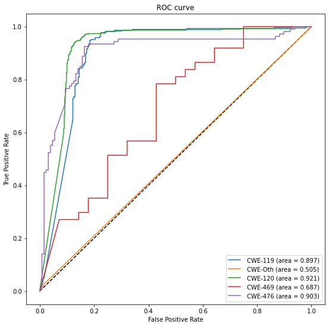

MLP
Contents
MLP#
import pandas as pd
import numpy as np
import argparse
import math
import string
from collections.abc import Iterable
from collections import Counter
import pandas as pd
import argparse
from sklearn.metrics import accuracy_score
from keras.models import Sequential
from keras.layers import Dense, Conv1D, Flatten
from tensorflow import keras
from sklearn.metrics import roc_curve
from sklearn.metrics import auc
from sklearn import datasets, metrics
from sklearn.model_selection import train_test_split
from sklearn.linear_model import LogisticRegression
from sklearn.metrics import average_precision_score, precision_recall_curve
from sklearn.metrics import auc, plot_precision_recall_curve
import matplotlib.pyplot as plt
from matplotlib import pyplot
from sklearn.metrics import classification_report
import os
from sklearn.model_selection import train_test_split
print(os.getcwd())
/content
from google.colab import drive
drive.mount('/content/drive')
Mounted at /content/drive
Import Dataset#
folder_path = '/content/drive/MyDrive/Vulnerability Prediction/Processed Datasets/'
#function to load and prepare dataset training labels
def load_data(path, column, rdm_state):
dataframe = pd.read_csv(path)
y = dataframe[column].astype(int) # numberize the labels i.e., tranforms True = 1, False = 0
print("Label Distribution: ")
print(y.value_counts())
y = y.values
X = dataframe.iloc[:, 7:]
num_features = len(X.columns)
X = X.values
#X = np.reshape(X, (len(X), num_features, 1))
print("Dataset: ")
print(f"\nShape of features: {X.shape} (# samples, # features, channel) of type {type(X)}" )
print(f"Shape of labels: {y.shape} (# samples, ) of type {type(X)}" )
X_train, X_test, y_train, y_test = train_test_split(X, y, test_size=0.10, random_state=rdm_state)
return X_train, X_test, y_train, y_test
def run_acccuracy(model, X, y):
loss, acc = model.evaluate(X, y, verbose=0)
print(f'Test Accuracy: {acc*100}')
def generate_roc_plot(model, x_test, y_test):
# Generate a prediction using model.predict()
# and calculate it's shape:
print("Generate a prediction")
prediction = model.predict(x_test).ravel()
print("prediction shape:", prediction.shape)
fpr_keras, tpr_keras, thresholds_keras = roc_curve(y_test, prediction)
auc_keras = auc(fpr_keras, tpr_keras)
#generate plot
plt.figure(1)
plt.plot([0, 1], [0, 1], 'k--')
plt.plot(fpr_keras, tpr_keras, label=' (area = {:.3f})'.format(auc_keras))
plt.xlabel('False positive rate')
plt.ylabel('True positive rate')
plt.title('ROC curve')
plt.legend(loc='best')
plt.show()
def mlp_model(num_features):
# define the keras model
model = Sequential()
model.add(Dense(10, input_dim=num_features, activation='relu'))
model.add(Dense(1, activation='sigmoid'))
# compile the keras model
model.summary()
model.compile(loss='binary_crossentropy', optimizer='adam', metrics=['accuracy'])
#model.compile(loss='categorical_crossentropy', optimizer='adam', metrics=['accuracy'])
return model
X_cwe_119_train, X_cwe_119_test, y_cwe_119_train, y_cwe_119_test = load_data(folder_path + 'cwe_119_train.csv', 'CWE-119', 42)
mlp_cwe_119 = mlp_model(1533)
mlp_cwe_119 = keras.models.load_model('/content/drive/MyDrive/Vulnerability Prediction/MLP/mlp_cwe_119_model.ph')
Label Distribution:
1 2710
0 2710
Name: CWE-119, dtype: int64
Dataset:
Shape of features: (5420, 1533) (# samples, # features, channel) of type <class 'numpy.ndarray'>
Shape of labels: (5420,) (# samples, ) of type <class 'numpy.ndarray'>
Model: "sequential_1"
_________________________________________________________________
Layer (type) Output Shape Param #
=================================================================
dense_2 (Dense) (None, 10) 15340
dense_3 (Dense) (None, 1) 11
=================================================================
Total params: 15,351
Trainable params: 15,351
Non-trainable params: 0
_________________________________________________________________
# fit the keras model on the dataset
#history = mlp_cwe_119.fit(X_cwe_119_train, y_cwe_119_train, epochs=10, batch_size=10, verbose=2)
Epoch 1/10
488/488 - 1s - loss: 0.3375 - accuracy: 0.8670 - 1s/epoch - 3ms/step
Epoch 2/10
488/488 - 1s - loss: 0.3343 - accuracy: 0.8700 - 1s/epoch - 3ms/step
Epoch 3/10
488/488 - 1s - loss: 0.3397 - accuracy: 0.8682 - 1s/epoch - 3ms/step
Epoch 4/10
488/488 - 1s - loss: 0.3315 - accuracy: 0.8717 - 1s/epoch - 3ms/step
Epoch 5/10
488/488 - 1s - loss: 0.3325 - accuracy: 0.8741 - 1s/epoch - 3ms/step
Epoch 6/10
488/488 - 1s - loss: 0.3304 - accuracy: 0.8743 - 1s/epoch - 3ms/step
Epoch 7/10
488/488 - 1s - loss: 0.3353 - accuracy: 0.8721 - 1s/epoch - 3ms/step
Epoch 8/10
488/488 - 1s - loss: 0.3246 - accuracy: 0.8793 - 1s/epoch - 3ms/step
Epoch 9/10
488/488 - 1s - loss: 0.3249 - accuracy: 0.8784 - 1s/epoch - 3ms/step
Epoch 10/10
488/488 - 1s - loss: 0.3247 - accuracy: 0.8713 - 1s/epoch - 3ms/step
run_acccuracy(mlp_cwe_119, X_cwe_119_test, y_cwe_119_test)
generate_roc_plot(mlp_cwe_119, X_cwe_119_test, y_cwe_119_test)
Test Accuracy: 87.63837814331055
Generate a prediction
prediction shape: (542,)
#mlp_cwe_119.save('/scratch365/palarcon/Vulnerability Project/MLP/mlp_cwe_119_model.ph')
2022-04-20 11:29:05.800053: W tensorflow/python/util/util.cc:368] Sets are not currently considered sequences, but this may change in the future, so consider avoiding using them.
INFO:tensorflow:Assets written to: /scratch365/palarcon/Vulnerability Project/MLP/mlp_cwe_119_model.ph/assets
CWE 120#
X_cwe_120_train, X_cwe_120_test, y_cwe_120_train, y_cwe_120_test = load_data(folder_path + 'cwe_120_train.csv', 'CWE-120', 45)
cwe_120_model = mlp_model(1533)
cwe_120_model = keras.models.load_model('/content/drive/MyDrive/Vulnerability Prediction/MLP/mlp_cwe_120_model.ph')
Label Distribution:
1 5159
0 5159
Name: CWE-120, dtype: int64
Dataset:
Shape of features: (10318, 1533) (# samples, # features, channel) of type <class 'numpy.ndarray'>
Shape of labels: (10318,) (# samples, ) of type <class 'numpy.ndarray'>
Model: "sequential_2"
_________________________________________________________________
Layer (type) Output Shape Param #
=================================================================
dense_4 (Dense) (None, 10) 15340
dense_5 (Dense) (None, 1) 11
=================================================================
Total params: 15,351
Trainable params: 15,351
Non-trainable params: 0
_________________________________________________________________
#history = cwe_120_model.fit(X_cwe_120_train, y_cwe_120_train, epochs=30, verbose=2)
Epoch 1/30
291/291 - 1s - loss: 0.2951 - accuracy: 0.8919 - 849ms/epoch - 3ms/step
Epoch 2/30
291/291 - 1s - loss: 0.2897 - accuracy: 0.8952 - 830ms/epoch - 3ms/step
Epoch 3/30
291/291 - 1s - loss: 0.2915 - accuracy: 0.8919 - 897ms/epoch - 3ms/step
Epoch 4/30
291/291 - 1s - loss: 0.2954 - accuracy: 0.8909 - 912ms/epoch - 3ms/step
Epoch 5/30
291/291 - 1s - loss: 0.3002 - accuracy: 0.8922 - 810ms/epoch - 3ms/step
Epoch 6/30
291/291 - 1s - loss: 0.2894 - accuracy: 0.8937 - 851ms/epoch - 3ms/step
Epoch 7/30
291/291 - 1s - loss: 0.2859 - accuracy: 0.8959 - 820ms/epoch - 3ms/step
Epoch 8/30
291/291 - 1s - loss: 0.2827 - accuracy: 0.8986 - 812ms/epoch - 3ms/step
Epoch 9/30
291/291 - 1s - loss: 0.2842 - accuracy: 0.8942 - 808ms/epoch - 3ms/step
Epoch 10/30
291/291 - 1s - loss: 0.2947 - accuracy: 0.8916 - 879ms/epoch - 3ms/step
Epoch 11/30
291/291 - 1s - loss: 0.2866 - accuracy: 0.8926 - 859ms/epoch - 3ms/step
Epoch 12/30
291/291 - 1s - loss: 0.2845 - accuracy: 0.8963 - 777ms/epoch - 3ms/step
Epoch 13/30
291/291 - 1s - loss: 0.2838 - accuracy: 0.8966 - 803ms/epoch - 3ms/step
Epoch 14/30
291/291 - 1s - loss: 0.2911 - accuracy: 0.8992 - 724ms/epoch - 2ms/step
Epoch 15/30
291/291 - 1s - loss: 0.2908 - accuracy: 0.8968 - 796ms/epoch - 3ms/step
Epoch 16/30
291/291 - 1s - loss: 0.2806 - accuracy: 0.9009 - 836ms/epoch - 3ms/step
Epoch 17/30
291/291 - 1s - loss: 0.2818 - accuracy: 0.8972 - 810ms/epoch - 3ms/step
Epoch 18/30
291/291 - 1s - loss: 0.2810 - accuracy: 0.9014 - 805ms/epoch - 3ms/step
Epoch 19/30
291/291 - 1s - loss: 0.2772 - accuracy: 0.9016 - 781ms/epoch - 3ms/step
Epoch 20/30
291/291 - 1s - loss: 0.2852 - accuracy: 0.8963 - 823ms/epoch - 3ms/step
Epoch 21/30
291/291 - 1s - loss: 0.2775 - accuracy: 0.9017 - 740ms/epoch - 3ms/step
Epoch 22/30
291/291 - 1s - loss: 0.2841 - accuracy: 0.8967 - 807ms/epoch - 3ms/step
Epoch 23/30
291/291 - 1s - loss: 0.2812 - accuracy: 0.9002 - 778ms/epoch - 3ms/step
Epoch 24/30
291/291 - 1s - loss: 0.2757 - accuracy: 0.9016 - 916ms/epoch - 3ms/step
Epoch 25/30
291/291 - 1s - loss: 0.2831 - accuracy: 0.8962 - 747ms/epoch - 3ms/step
Epoch 26/30
291/291 - 1s - loss: 0.2819 - accuracy: 0.8969 - 828ms/epoch - 3ms/step
Epoch 27/30
291/291 - 1s - loss: 0.2765 - accuracy: 0.9006 - 786ms/epoch - 3ms/step
Epoch 28/30
291/291 - 1s - loss: 0.2753 - accuracy: 0.9033 - 747ms/epoch - 3ms/step
Epoch 29/30
291/291 - 1s - loss: 0.2723 - accuracy: 0.9023 - 805ms/epoch - 3ms/step
Epoch 30/30
291/291 - 1s - loss: 0.2729 - accuracy: 0.9049 - 728ms/epoch - 3ms/step
run_acccuracy(cwe_120_model, X_cwe_120_test, y_cwe_120_test)
generate_roc_plot(cwe_120_model, X_cwe_120_test, y_cwe_120_test)
Test Accuracy: 87.40310072898865
Generate a prediction
prediction shape: (1032,)
#cwe_120_model.save('/scratch365/palarcon/Vulnerability Project/MLP/mlp_cwe_120_model.ph')
INFO:tensorflow:Assets written to: /scratch365/palarcon/Vulnerability Project/MLP/mlp_cwe_120_model.ph/assets
CWE 469#
X_cwe_469_train, X_cwe_469_test, y_cwe_469_train, y_cwe_469_test = load_data(folder_path + 'cwe_469_train.csv', 'CWE-469', 40)
cwe_469_model = mlp_model(1533)
cwe_469_model = keras.models.load_model('/content/drive/MyDrive/Vulnerability Prediction/MLP/mlp_cwe_469_model.ph')
Label Distribution:
1 324
0 324
Name: CWE-469, dtype: int64
Dataset:
Shape of features: (648, 1533) (# samples, # features, channel) of type <class 'numpy.ndarray'>
Shape of labels: (648,) (# samples, ) of type <class 'numpy.ndarray'>
Model: "sequential_3"
_________________________________________________________________
Layer (type) Output Shape Param #
=================================================================
dense_6 (Dense) (None, 10) 15340
dense_7 (Dense) (None, 1) 11
=================================================================
Total params: 15,351
Trainable params: 15,351
Non-trainable params: 0
_________________________________________________________________
# fit network
#history = cwe_469_model.fit(X_cwe_469_train, y_cwe_469_train, epochs=40, verbose=2)
Epoch 1/40
19/19 - 0s - loss: 40.6596 - accuracy: 0.4974 - 313ms/epoch - 16ms/step
Epoch 2/40
19/19 - 0s - loss: 17.0366 - accuracy: 0.5986 - 49ms/epoch - 3ms/step
Epoch 3/40
19/19 - 0s - loss: 10.5093 - accuracy: 0.6775 - 57ms/epoch - 3ms/step
Epoch 4/40
19/19 - 0s - loss: 6.7381 - accuracy: 0.7084 - 53ms/epoch - 3ms/step
Epoch 5/40
19/19 - 0s - loss: 4.5964 - accuracy: 0.7479 - 57ms/epoch - 3ms/step
Epoch 6/40
19/19 - 0s - loss: 3.2765 - accuracy: 0.7787 - 56ms/epoch - 3ms/step
Epoch 7/40
19/19 - 0s - loss: 2.1681 - accuracy: 0.8165 - 52ms/epoch - 3ms/step
Epoch 8/40
19/19 - 0s - loss: 1.5172 - accuracy: 0.8370 - 52ms/epoch - 3ms/step
Epoch 9/40
19/19 - 0s - loss: 1.4879 - accuracy: 0.8422 - 53ms/epoch - 3ms/step
Epoch 10/40
19/19 - 0s - loss: 1.3436 - accuracy: 0.8473 - 57ms/epoch - 3ms/step
Epoch 11/40
19/19 - 0s - loss: 0.8721 - accuracy: 0.8765 - 52ms/epoch - 3ms/step
Epoch 12/40
19/19 - 0s - loss: 0.5540 - accuracy: 0.9039 - 55ms/epoch - 3ms/step
Epoch 13/40
19/19 - 0s - loss: 0.4090 - accuracy: 0.9177 - 54ms/epoch - 3ms/step
Epoch 14/40
19/19 - 0s - loss: 0.2891 - accuracy: 0.9383 - 49ms/epoch - 3ms/step
Epoch 15/40
19/19 - 0s - loss: 0.2592 - accuracy: 0.9434 - 53ms/epoch - 3ms/step
Epoch 16/40
19/19 - 0s - loss: 0.2240 - accuracy: 0.9485 - 51ms/epoch - 3ms/step
Epoch 17/40
19/19 - 0s - loss: 0.2061 - accuracy: 0.9503 - 51ms/epoch - 3ms/step
Epoch 18/40
19/19 - 0s - loss: 0.1466 - accuracy: 0.9640 - 50ms/epoch - 3ms/step
Epoch 19/40
19/19 - 0s - loss: 0.1696 - accuracy: 0.9554 - 48ms/epoch - 3ms/step
Epoch 20/40
19/19 - 0s - loss: 0.1338 - accuracy: 0.9657 - 50ms/epoch - 3ms/step
Epoch 21/40
19/19 - 0s - loss: 0.1264 - accuracy: 0.9588 - 48ms/epoch - 3ms/step
Epoch 22/40
19/19 - 0s - loss: 0.1253 - accuracy: 0.9623 - 47ms/epoch - 2ms/step
Epoch 23/40
19/19 - 0s - loss: 0.1071 - accuracy: 0.9623 - 45ms/epoch - 2ms/step
Epoch 24/40
19/19 - 0s - loss: 0.0968 - accuracy: 0.9743 - 46ms/epoch - 2ms/step
Epoch 25/40
19/19 - 0s - loss: 0.0985 - accuracy: 0.9691 - 48ms/epoch - 3ms/step
Epoch 26/40
19/19 - 0s - loss: 0.0969 - accuracy: 0.9726 - 48ms/epoch - 3ms/step
Epoch 27/40
19/19 - 0s - loss: 0.0868 - accuracy: 0.9777 - 49ms/epoch - 3ms/step
Epoch 28/40
19/19 - 0s - loss: 0.0758 - accuracy: 0.9760 - 49ms/epoch - 3ms/step
Epoch 29/40
19/19 - 0s - loss: 0.0799 - accuracy: 0.9743 - 50ms/epoch - 3ms/step
Epoch 30/40
19/19 - 0s - loss: 0.0753 - accuracy: 0.9726 - 50ms/epoch - 3ms/step
Epoch 31/40
19/19 - 0s - loss: 0.0700 - accuracy: 0.9726 - 55ms/epoch - 3ms/step
Epoch 32/40
19/19 - 0s - loss: 0.0641 - accuracy: 0.9760 - 57ms/epoch - 3ms/step
Epoch 33/40
19/19 - 0s - loss: 0.0613 - accuracy: 0.9777 - 54ms/epoch - 3ms/step
Epoch 34/40
19/19 - 0s - loss: 0.0610 - accuracy: 0.9743 - 56ms/epoch - 3ms/step
Epoch 35/40
19/19 - 0s - loss: 0.0571 - accuracy: 0.9777 - 49ms/epoch - 3ms/step
Epoch 36/40
19/19 - 0s - loss: 0.0536 - accuracy: 0.9777 - 52ms/epoch - 3ms/step
Epoch 37/40
19/19 - 0s - loss: 0.0500 - accuracy: 0.9811 - 54ms/epoch - 3ms/step
Epoch 38/40
19/19 - 0s - loss: 0.0469 - accuracy: 0.9811 - 52ms/epoch - 3ms/step
Epoch 39/40
19/19 - 0s - loss: 0.0454 - accuracy: 0.9794 - 47ms/epoch - 2ms/step
Epoch 40/40
19/19 - 0s - loss: 0.0429 - accuracy: 0.9811 - 53ms/epoch - 3ms/step
run_acccuracy(cwe_469_model, X_cwe_469_test, y_cwe_469_test)
generate_roc_plot(cwe_469_model, X_cwe_469_test, y_cwe_469_test)
Test Accuracy: 63.07692527770996
Generate a prediction
prediction shape: (65,)
#cwe_469_model.save('/scratch365/palarcon/Vulnerability Project/MLP/mlp_cwe_469_model.ph')
INFO:tensorflow:Assets written to: /scratch365/palarcon/Vulnerability Project/MLP/mlp_cwe_469_model.ph/assets
CWE 476#
X_cwe_476_train, X_cwe_476_test, y_cwe_476_train, y_cwe_476_test = load_data(folder_path + 'cwe_476_train.csv', 'CWE-476', 40)
cwe_476_model = mlp_model(1533)
cwe_476_model = keras.models.load_model('/content/drive/MyDrive/Vulnerability Prediction/MLP/mlp_cwe_476_model.ph')
Label Distribution:
1 1174
0 1174
Name: CWE-476, dtype: int64
Dataset:
Shape of features: (2348, 1533) (# samples, # features, channel) of type <class 'numpy.ndarray'>
Shape of labels: (2348,) (# samples, ) of type <class 'numpy.ndarray'>
Model: "sequential_4"
_________________________________________________________________
Layer (type) Output Shape Param #
=================================================================
dense_8 (Dense) (None, 10) 15340
dense_9 (Dense) (None, 1) 11
=================================================================
Total params: 15,351
Trainable params: 15,351
Non-trainable params: 0
_________________________________________________________________
# fit network
#history = cwe_476_model.fit(X_cwe_476_train, y_cwe_476_train, epochs=30, verbose=2)
Epoch 1/30
67/67 - 0s - loss: 0.2825 - accuracy: 0.9072 - 203ms/epoch - 3ms/step
Epoch 2/30
67/67 - 0s - loss: 0.2918 - accuracy: 0.9001 - 185ms/epoch - 3ms/step
Epoch 3/30
67/67 - 0s - loss: 0.2633 - accuracy: 0.9158 - 188ms/epoch - 3ms/step
Epoch 4/30
67/67 - 0s - loss: 0.2516 - accuracy: 0.9248 - 189ms/epoch - 3ms/step
Epoch 5/30
67/67 - 0s - loss: 0.2505 - accuracy: 0.9224 - 192ms/epoch - 3ms/step
Epoch 6/30
67/67 - 0s - loss: 0.2934 - accuracy: 0.9186 - 182ms/epoch - 3ms/step
Epoch 7/30
67/67 - 0s - loss: 0.2865 - accuracy: 0.9158 - 185ms/epoch - 3ms/step
Epoch 8/30
67/67 - 0s - loss: 0.2504 - accuracy: 0.9191 - 180ms/epoch - 3ms/step
Epoch 9/30
67/67 - 0s - loss: 0.2432 - accuracy: 0.9153 - 192ms/epoch - 3ms/step
Epoch 10/30
67/67 - 0s - loss: 0.2281 - accuracy: 0.9229 - 184ms/epoch - 3ms/step
Epoch 11/30
67/67 - 0s - loss: 0.2224 - accuracy: 0.9276 - 173ms/epoch - 3ms/step
Epoch 12/30
67/67 - 0s - loss: 0.2139 - accuracy: 0.9219 - 171ms/epoch - 3ms/step
Epoch 13/30
67/67 - 0s - loss: 0.2138 - accuracy: 0.9233 - 184ms/epoch - 3ms/step
Epoch 14/30
67/67 - 0s - loss: 0.2001 - accuracy: 0.9295 - 191ms/epoch - 3ms/step
Epoch 15/30
67/67 - 0s - loss: 0.2097 - accuracy: 0.9219 - 188ms/epoch - 3ms/step
Epoch 16/30
67/67 - 0s - loss: 0.1924 - accuracy: 0.9276 - 187ms/epoch - 3ms/step
Epoch 17/30
67/67 - 0s - loss: 0.1873 - accuracy: 0.9295 - 194ms/epoch - 3ms/step
Epoch 18/30
67/67 - 0s - loss: 0.1988 - accuracy: 0.9333 - 186ms/epoch - 3ms/step
Epoch 19/30
67/67 - 0s - loss: 0.1816 - accuracy: 0.9300 - 186ms/epoch - 3ms/step
Epoch 20/30
67/67 - 0s - loss: 0.2288 - accuracy: 0.9148 - 184ms/epoch - 3ms/step
Epoch 21/30
67/67 - 0s - loss: 0.1901 - accuracy: 0.9333 - 183ms/epoch - 3ms/step
Epoch 22/30
67/67 - 0s - loss: 0.2120 - accuracy: 0.9124 - 192ms/epoch - 3ms/step
Epoch 23/30
67/67 - 0s - loss: 0.1739 - accuracy: 0.9375 - 192ms/epoch - 3ms/step
Epoch 24/30
67/67 - 0s - loss: 0.1804 - accuracy: 0.9328 - 185ms/epoch - 3ms/step
Epoch 25/30
67/67 - 0s - loss: 0.1706 - accuracy: 0.9361 - 177ms/epoch - 3ms/step
Epoch 26/30
67/67 - 0s - loss: 0.1631 - accuracy: 0.9399 - 179ms/epoch - 3ms/step
Epoch 27/30
67/67 - 0s - loss: 0.1628 - accuracy: 0.9361 - 172ms/epoch - 3ms/step
Epoch 28/30
67/67 - 0s - loss: 0.1533 - accuracy: 0.9442 - 168ms/epoch - 3ms/step
Epoch 29/30
67/67 - 0s - loss: 0.1671 - accuracy: 0.9356 - 166ms/epoch - 2ms/step
Epoch 30/30
67/67 - 0s - loss: 0.1517 - accuracy: 0.9432 - 169ms/epoch - 3ms/step
run_acccuracy(cwe_476_model, X_cwe_476_test, y_cwe_476_test)
generate_roc_plot(cwe_476_model, X_cwe_476_test, y_cwe_476_test)
Test Accuracy: 85.53191423416138
Generate a prediction
prediction shape: (235,)
#cwe_476_model.save('/scratch365/palarcon/Vulnerability Project/MLP/mlp_cwe_476_model.ph')
INFO:tensorflow:Assets written to: /scratch365/palarcon/Vulnerability Project/MLP/mlp_cwe_476_model.ph/assets
CWE Other#
X_cwe_other_train, X_cwe_other_test, y_cwe_other_train, y_cwe_other_test = load_data(folder_path + 'cwe_other_train.csv', 'CWE-other', 40)
cwe_other_model = mlp_model(1533)
cwe_other_model = keras.models.load_model('/content/drive/MyDrive/Vulnerability Prediction/MLP/mlp_cwe_120_model.ph')
Label Distribution:
1 3314
0 3314
Name: CWE-other, dtype: int64
Dataset:
Shape of features: (6628, 1533) (# samples, # features, channel) of type <class 'numpy.ndarray'>
Shape of labels: (6628,) (# samples, ) of type <class 'numpy.ndarray'>
Model: "sequential_5"
_________________________________________________________________
Layer (type) Output Shape Param #
=================================================================
dense_10 (Dense) (None, 10) 15340
dense_11 (Dense) (None, 1) 11
=================================================================
Total params: 15,351
Trainable params: 15,351
Non-trainable params: 0
_________________________________________________________________
# fit network
history = cwe_other_model.fit(X_cwe_other_train, y_cwe_other_train, epochs=30, verbose=2)
Epoch 1/30
187/187 - 1s - loss: 103.1153 - accuracy: 0.5656 - 911ms/epoch - 5ms/step
Epoch 2/30
187/187 - 0s - loss: 35.3338 - accuracy: 0.5982 - 356ms/epoch - 2ms/step
Epoch 3/30
187/187 - 0s - loss: 17.6765 - accuracy: 0.6050 - 343ms/epoch - 2ms/step
Epoch 4/30
187/187 - 0s - loss: 9.2168 - accuracy: 0.5953 - 356ms/epoch - 2ms/step
Epoch 5/30
187/187 - 0s - loss: 4.9260 - accuracy: 0.5666 - 353ms/epoch - 2ms/step
Epoch 6/30
187/187 - 0s - loss: 2.6959 - accuracy: 0.5531 - 345ms/epoch - 2ms/step
Epoch 7/30
187/187 - 0s - loss: 1.6527 - accuracy: 0.5393 - 350ms/epoch - 2ms/step
Epoch 8/30
187/187 - 0s - loss: 1.3591 - accuracy: 0.5393 - 363ms/epoch - 2ms/step
Epoch 9/30
187/187 - 0s - loss: 1.0347 - accuracy: 0.5375 - 363ms/epoch - 2ms/step
Epoch 10/30
187/187 - 0s - loss: 0.9067 - accuracy: 0.5360 - 350ms/epoch - 2ms/step
Epoch 11/30
187/187 - 0s - loss: 1.0373 - accuracy: 0.5311 - 334ms/epoch - 2ms/step
Epoch 12/30
187/187 - 0s - loss: 0.7957 - accuracy: 0.5400 - 365ms/epoch - 2ms/step
Epoch 13/30
187/187 - 0s - loss: 0.7903 - accuracy: 0.5420 - 372ms/epoch - 2ms/step
Epoch 14/30
187/187 - 0s - loss: 0.7751 - accuracy: 0.5408 - 358ms/epoch - 2ms/step
Epoch 15/30
187/187 - 0s - loss: 0.8348 - accuracy: 0.5403 - 375ms/epoch - 2ms/step
Epoch 16/30
187/187 - 0s - loss: 0.7087 - accuracy: 0.5396 - 375ms/epoch - 2ms/step
Epoch 17/30
187/187 - 0s - loss: 0.6882 - accuracy: 0.5423 - 350ms/epoch - 2ms/step
Epoch 18/30
187/187 - 0s - loss: 0.6881 - accuracy: 0.5432 - 355ms/epoch - 2ms/step
Epoch 19/30
187/187 - 0s - loss: 0.6865 - accuracy: 0.5423 - 365ms/epoch - 2ms/step
Epoch 20/30
187/187 - 0s - loss: 0.7105 - accuracy: 0.5422 - 367ms/epoch - 2ms/step
Epoch 21/30
187/187 - 0s - loss: 0.8024 - accuracy: 0.5408 - 373ms/epoch - 2ms/step
Epoch 22/30
187/187 - 0s - loss: 0.6649 - accuracy: 0.5405 - 340ms/epoch - 2ms/step
Epoch 23/30
187/187 - 0s - loss: 0.6566 - accuracy: 0.5400 - 352ms/epoch - 2ms/step
Epoch 24/30
187/187 - 0s - loss: 0.7307 - accuracy: 0.5378 - 363ms/epoch - 2ms/step
Epoch 25/30
187/187 - 0s - loss: 0.7508 - accuracy: 0.5361 - 377ms/epoch - 2ms/step
Epoch 26/30
187/187 - 0s - loss: 0.8446 - accuracy: 0.5343 - 348ms/epoch - 2ms/step
Epoch 27/30
187/187 - 0s - loss: 0.7018 - accuracy: 0.5323 - 369ms/epoch - 2ms/step
Epoch 28/30
187/187 - 0s - loss: 0.7039 - accuracy: 0.5306 - 372ms/epoch - 2ms/step
Epoch 29/30
187/187 - 0s - loss: 0.7850 - accuracy: 0.5281 - 382ms/epoch - 2ms/step
Epoch 30/30
187/187 - 0s - loss: 0.7053 - accuracy: 0.5293 - 370ms/epoch - 2ms/step
run_acccuracy(cwe_other_model, X_cwe_other_test, y_cwe_other_test)
generate_roc_plot(cwe_other_model, X_cwe_other_test, y_cwe_other_test)
Test Accuracy: 53.99698615074158
Generate a prediction
prediction shape: (663,)
#cwe_other_model.save('/content/drive/MyDrive/Vulnerability Prediction/MLP/mlp_cwe_120_model.ph')
INFO:tensorflow:Assets written to: /content/drive/MyDrive/Vulnerability Prediction/MLP/mlp_cwe_120_model.ph/assets
Inference and Validation#
def generate_roc_plots(models, x_test, y_test, names):
# Generate a prediction using model.predict()
# and calculate it's shape:
fpr, tpr, aucs = [], [], []
#Generate a prediction
for i in range(len(models)):
model = models[i]
pred = model.predict(x_test[i]).ravel()
fpr_keras, tpr_keras, thresholds_keras = roc_curve(y_test[i], pred)
auc_keras = auc(fpr_keras, tpr_keras)
fpr.append(fpr_keras)
tpr.append(tpr_keras)
aucs.append(auc_keras)
#generate plot
plt.figure(figsize=(9,9))
plt.plot([0, 1], [0, 1], 'k--')
for i in range(len(models)):
plt.plot(fpr[i], tpr[i], label=' {} (area = {:.3f})'.format(names[i],aucs[i]))
plt.xlabel('False Positive Rate')
plt.ylabel('True Positive Rate')
plt.title('ROC curve')
plt.legend(loc='best')
plt.show()
mod = [mlp_cwe_119, cwe_other_model, cwe_120_model, cwe_469_model, cwe_476_model]
x_tests = [X_cwe_119_test, X_cwe_other_test, X_cwe_120_test, X_cwe_469_test, X_cwe_476_test]
y_tests = [y_cwe_119_test, y_cwe_other_test, y_cwe_120_test, y_cwe_469_test, y_cwe_476_test]
names = ['CWE-119', 'CWE-Oth', 'CWE-120', 'CWE-469','CWE-476']
generate_roc_plots(mod, x_tests, y_tests, names)

def classificationReport(model, X, y):
# make a prediction on the test set
yhat = model.predict(X)
# round probabilities to class labels
yhat = yhat.round()
print(classification_report(y, yhat))
for i in range(len(mod)):
print(names[i])
classificationReport(mod[i], x_tests[i], y_tests[i])
CWE-119
precision recall f1-score support
0 0.91 0.82 0.86 255
1 0.85 0.93 0.89 287
accuracy 0.88 542
macro avg 0.88 0.87 0.88 542
weighted avg 0.88 0.88 0.88 542
CWE-Oth
precision recall f1-score support
0 0.53 0.99 0.69 349
1 0.64 0.02 0.04 314
accuracy 0.53 663
macro avg 0.58 0.51 0.37 663
weighted avg 0.58 0.53 0.38 663
CWE-120
precision recall f1-score support
0 0.85 0.90 0.87 500
1 0.90 0.85 0.87 532
accuracy 0.87 1032
macro avg 0.87 0.87 0.87 1032
weighted avg 0.88 0.87 0.87 1032
CWE-469
precision recall f1-score support
0 0.57 0.57 0.57 28
1 0.68 0.68 0.68 37
accuracy 0.63 65
macro avg 0.62 0.62 0.62 65
weighted avg 0.63 0.63 0.63 65
CWE-476
precision recall f1-score support
0 0.89 0.84 0.86 128
1 0.82 0.87 0.85 107
accuracy 0.86 235
macro avg 0.85 0.86 0.85 235
weighted avg 0.86 0.86 0.86 235